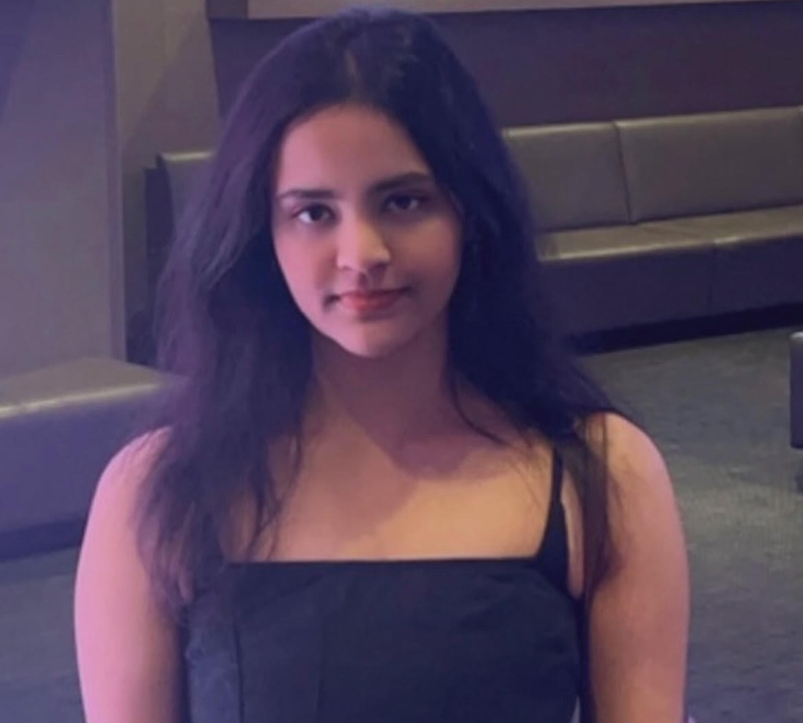

Swasthi P Rao
ML Researcher Data Scientist Software Engineer
Innovatively optimizing solutions and workflows.


Innovatively optimizing solutions and workflows.
I am passionate about making high-end technology accessible to everyone while continually expanding my skill set. With an M.S. in Electrical Engineering from Columbia University, specializing in Data-Driven Analysis and Computation, I thrive on creating impactful, data-driven machine learning solutions.
Currently a Senior Applied Scientist within the core LLM & Agentic AI group in the foundation models team at Capital One, my professional journey spans experiences at organizations like FINRA, where I built robust prediction models and evaluated LLMs for MLOps, to JPMorgan Chase, where I integrated big data techniques by migrating applications to AWS. I’ve also researched cutting-edge technologies like neural ordinary differential equations and reinforcement learning during my time at Bosch.
As a Research Assistant at Columbia, I worked on optimizing LLM-based negotiation systems using game theory and reinforcement learning and personalizing an open-source agentic developer tool, while also guiding students as a Graduate Teaching Assistant in AI Ethics and Data Science.
With a focus on building intelligent software and cloud-native applications, I’m eager to contribute as a data scientist, ML researcher, and software engineer combined in the perfect ratio. My academic and professional mission is to bridge technology with real-world impact, ensuring accessibility and innovation.
 Capital One, New York, NY
Capital One, New York, NY
Senior Applied Scientistt | May 2025 - Present
Designing a configurable multi-agent LLM based architecture with GPT OSS, LLama-3 to empower the development of AI assistant applications and exploring the enhancement of tool-driven approaches in multi-turn conversation disambiguation
Research Assistant | Sep 2024 - May 2025
Personalized an open-source agentic developer tool with effective memory to build task-oriented dialog agents dynamically. Engaged in developing a cutting-edge LLM-based Retrieval-Augmented Generation (RAG) education chatbot tailored for multi-issue negotiations. Leveraging data-driven and game-theoretic approaches, I enhanced the dialogue system by incorporating Pareto optimality and egalitarian principles, while establishing a robust reinforcement learning feedback mechanism to refine user interactions.
Data Scientist Intern | May 2024 - Aug 2024
Employed prompt engineering alongside few-shot and active learning techniques to critically assess and compare industry-leading language models such as Amazon Q and GitHub Copilot. Successfully optimized the AWS Data Lake pipeline, resulting in a significant enhancement of defect prediction accuracy in MLOps data flow from 74% to 86% using a stacking ensemble model comprising LightGBM, SVC, AdaBoost, and Isolation Forest clustering. Visualized financial trend metrics using Grafana for actionable insights.
Software Engineering Intern | Feb 2023 - May 2023
Enhanced data ingestion workflows by implementing Kafka data partitioning, AWS Glue, Directed Acyclic Graphs (DAGs), and Athena databases, achieving a 20% reduction in latency. Contributed to the migration of an on-premise ETL platform to AWS, utilizing Hadoop and Spark on EKS to efficiently process large-scale archival data.
Machine Learning Research Intern | Jun 2022 - Jul 2022
Investigated generative reinforcement learning methods, applying transfer learning to improve battery cell chemistry predictions, resulting in a remarkable 74.6% reduction in root mean square error (RMSE). Conducted a comparative analysis of Neural Ordinary Differential Equations (ODE) performance in continuous time series modeling, utilizing iterative optimization techniques in both Julia and Python.
INFO: Analyzed 9 lexical diversity measures (NLP) in AD patient speech, comparing 7 models (highest accuracy - KNN: 88.92%). This paper aims to analyze the difference in linguistic features between control and dementia groups regarding lexical diversity through measures like Brunet’s and Sichel’s measure. The result displays the difference in lexical diversity, which is a significant marker for cognitive ability in speech.
Published in Proceedings of the 15th International Conference on Agents and Artificial Intelligence (ICAART) 2023, SCITEPRESS Journal.
Paper and Github Links -


Conducted a comprehensive analysis of VAE reparameterization and its optimization performance, focusing on the latent space dynamics. Developed innovative data augmentation techniques using synthetically generated VAE samples, achieving a 45% reduction in reconstruction loss and an 11% decrease in processing time**, enhancing model efficiency.
Leveraged sentiment analysis on corporate tweets using NLTK to derive insights into public perception. Conducted a comparative analysis of PCA's impact on stock data, integrating sentiment scores and training various forecasting models (Random Forest, Adaboost, Linear Regression, LSTM) to optimize short and long-term stock prediction scenarios.
Investigated the effects of weight binarization in deep neural networks** by reproducing the BinaryConnect architecture written originally in Theano and Lasagne and adapting it to TensorFlow. Developed custom layers to optimize performance, contributing to advancements in model efficiency and robustness in deep learning applications.
Designed and implemented a cloud-native full-stack application** to enhance alumni engagement. Developed event-driven microservices- posts (Azure), users (GCP) and messages (AWS) for alumni connections using Google Pub/Sub, enabling API Gateway, SSO, JWT (for authentication) and GraphQL to facilitate dynamic user interactions and ensure scalable, maintainable architecture.
Year: 2015
Represented India among 68 countries to win a global app-making contest and gain seed funding of $10,000. Recognized by the Wall Street Journal, Prime Minister Narendra Modi, and the then US Ambassador Richard Verma.
Click to Learn MoreYear: 2021
Awarded by the United Natios Acdemic Impact for my social impact on campus in bettering gender equality and bringing women empowerment with my initiative—a campus club "Seiscore" providing an interdisciplinary makerspace and resources for women engineers.
Click to Learn MoreYear: 2021
Awarded by by the Institute for International Education (IIE) for all-round academic excellence and outstanding passion to solve world problems with technology, receiving a six-month mentorship from Goldman Sachs on professionalism in the IT industry.
Click to Learn MoreYear: 2023
Received the WeAmplify Scholarship from Harvard to attend the largest coding conference for women—Harvard WECode, in light of my achievements and academic record.
Click to Learn MoreYear: 2019 - 2023
Awarded by my undergraduate institution, PES University, for being in the top 5% of the batch academically. This scholarship covered 50% of my tuition for 4 years (2019-2023).
Click to Learn MoreFeel free to get in touch via email or LinkedIn for any collaboration opportunities!